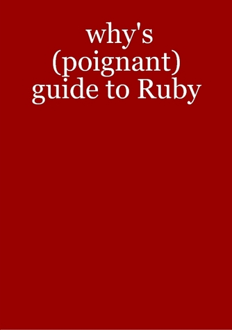

Someone's Selling The Poignant Guide

Well well well! Here we go. Finally! I have waited so long for this.
Someone (and I haven’t the foggiest who) is selling Why’s (Poignant) Guide to Ruby on Lulu. The book is sold here and it’s a really, really bad deal. Thirty bucks for the paperback and ten for the PDF. Which is totally shady because there are lots of good PDFs that folks around the Web have fashioned.
I know your instincts are going to be to try to get this thing shut down. Please don’t do that! This shopkeeper is totally within rights to do this.
Anyone (at all) may publish and sell the guide at their own price, of any quality. Even the PDF or HTML or YAML versions. Sure, well, I guess this shop’s prices are kind of ridiculous and the cover (at right) isn’t anything special. Not to mention that it appears to only go through chapter six, which omits a good twelve pages of illustration. Anyway, that’s editorial prerogative. Who knows, it might be better that way.
And, yeah, this isn’t that big of a deal, but what makes this special to me though is that someone’s put their toe in the water. And I’m standing here, nodding, or clapping, maybe playing the tambourine, maybe smoking turkey-flavored cigars, definitely firing harmless suction cup sticky arrows, and just pleased as punch.
I’ve got all the hairspray and funny money I need to make a life!
Okay, now, as the book nears completion, I see three possible outcomes:
- Small presses will print their own editions, which will compete to be faithful to the style of the book. This would be great for readers, as they could choose an edition that best suited them. And I like it because it suggests what you see with reprints of classic literature: that the publishers take on the book because they really love it.
- Or, maybe, a large publisher will swoop in and put one out that is of the same shape and mute as every other tech book on the shelf. And, given a large enough publisher, perhaps everyone else will just assume they own the rights. I doubt this will happen since that large publisher will probably be too nervous to publish without my express endorsement. (Not for legal reasons, just because of how things work.)
- Or, nothing at all. The book will dwindle and fade into obscurity.
Can you imagine what it’s like to write a book and let anyone have it? And, then, to just watch where it goes? The book’s fate is truly in the reader’s hands. And the outcome is based solely on the book itself. It’s like sending off balloons with a note to Iceland.

Evdawg
Why, I would love to have a physical copy of your book. I can’t wait until I can pick up a nice hardcover copy with glossy pages!
Peter Cooper
I think a lot of people would donate a section of their liver to get a copy of the “real” book as seen on the front of http://poignantguide.net/ruby/ .. think what you could do with all of those livers!
Youpi
I’d only buy from a publisher that would honor the onion-bundling deal.
ndg
I wouldn’t be surprised if they set it up just to get their own print copy. Lulu is outrageously expensive at the best of times. It’s just a pity that the edition sucks so hard: what it really needs is someone to painstakingly typeset each individual page, not just print-screen the HTML.
Dr Nic
I have 3 spare livers. Do I get a bulk discount?
fREW
I agree with ndg. What would be nice is if we got a good LaTeX human and followed that path. If I had the time I would totally do it and then sell the book at a price that would be like, 2-5$ over cost. What would be nice is if we could do a Magnatune style dealio so that people can pay more if they feel like it, then the seller could like, donate money to a random guy, hoping that the random guy is why. And if not? Bonus to humanity right?
murphy
now that’s poignant. I won’t buy a hard copy of the book…well, to show it to others, maybe, but I have my Firefox keyword for the English version and that’s where I want to read it. I always doubted the special advantage of printed books over digital ones.
hey, the offer has the keywords “web 2.0” and “Ruby on Rails” in it. I didn’t even know they were mentioned in the book :D
lwu
I got a local printer to make me a black+white, bound copy of the PDF for about ten bucks USD.
The first time they printed it, _why’s graphical radiosity seemed to overflow the poor printer’s buffers and whole pages were left halfblank.
topfunky
I had a personal, private copy of the guide printed by Lulu about a year ago and it also left several pages blank. From the screenshots of this copy, it looked like the same PDF copy floating around the internet that I used. If the publisher is reading this, can you verify that it actually prints all the pages?
Rufo
I’ve actually been really interested in laying out the poignant guide properly and putting up on Lulu, with revenue to go to some charity of _why’s choice (or perhaps the bring _why to RailsConf 2008 fund :-). Last time I looked into it I didn’t find high-res version of the artwork though… if that’s changed, that’s something I’d love to look into in my spare time.
LninYo
I was afraid of this…
QuickRedFox
Félicitations?
meek
I agree with Youpi, the onion is important. For me, it’s actually the most important part of the book. (And so poignant!)
peter
What?? No onion??! 30 bucks for a book, that can be found freely on the interwebs, without an onion! Shame!
AndrewO
I for one refuse to buy a poignant guide that doesn’t feature animated e-paper capable of showing illuminated letters that expand and curl out when you turn to their page!
MenTaLguY
It definitely would be nice to have hi-res artwork…
sudara
Glossy Hardcover’s the way to go!
digifer
Hai! I got ur balloonz in Iceland!
Comments are closed for this entry.